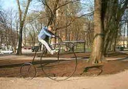
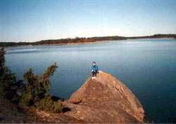
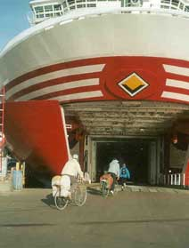

ВЕЛОПУТЕШЕСТВИЕ
ПО АЛАНДАМ: Байки, острова и паромы
СПб - Турку - Кустави - Экеро - Уппсала - Стокгольм - Мариехамн - Турку
- СПб. 395 км, 9 дней
9 - 17 августа 2009 года состоится велопоход по Финляндии, Швеции и Аландским островам "Байки, острова и паромы"!
Это новая версия нашего самого популярного похода!
Поход пройдет в основном по тихим дорожкам на островах Аландского архипелага. Между островами курсируют паромы, а некоторые из них соединены мостами и дамбами, так что за время путешествия мы побываем почти на сотне островов. Дневные пробеги - небольшие, что позволяет участвовать не очень подготовленным людям. Вместе с тем, у сильных велосипедистов будет, как правило, возможность закрутить дополнительную петлю и удовлетворить свои спортивные амбиции.
Ночлеги будут организованы в "хостелах" ( pansionats / youth hostels ) и коттеджах ( cottages / cabins ). Размеры комнат и коттеджей могут различаться. Душ есть везде, но удобства во многих местах общие. При этом чистота, опрятность и уют неизменны. Часто к нашим услугах будет сауна, как правило, с возможностью выпрыгнуть из нее в освежающие балтийские воды.
|  |
|
На улицах Турку
можно найти велосипед подходящего размера... |
На маршруте будет что посмотреть: Турку,
Уппсала, Мариехамн, Стокгольм, на обратном пути мы сделаем остановку в
Хамине. Интересно отметить, что нам встретятся достопримечательности
не только финского или шведского происхождения, но и российского! Ведь
Аландский архипелаг вплоть до 1917 года принадлежал России, о чем свидетельствуют
руины крепости Бомарсунд, которые мы посетим. Но самое впечатляющее -
это удивительная и разнообразная природа архипелага: уходящие в воду скалы,
полные цветов леса, обилие водоплавающих, и, конечно, вода повсюду: открытые
морские пространства, заливы, бухточки, фьорды, проливы, шхеры…. Можно
провести некоторые аналогии со шхерами Ладоги, но масштаб иной. Особенностью
движения по островным дорогам является минимальное количество транспорта;
время от времени проходит десяток машин с очередного парома, и дорога
снова пустеет.
Группу будет сопровождать гид и машина сопровождения, где будет ехать багаж, аптечка, еда на перекусы и ремнабор. Таким образом, участники поедут практически налегке.
Паромы - это отдельный рассказ. Мы побываем на самых разных: от небольших корабликов, которые "подбросят нас" буквально на пару километров (правильнее сказать - на пару миль, дело-то - морское!), до больших многопалубных судов со "шведским столом" и продолжительностью рейса более четырех часов.
День 1: Питер –Turku - Norragard. 600 км. Не стоит пугаться - это на автобусе.
Первый день путешествия - традиционно самый трудный. Ранним утром мы грузимся на автобус и отправляемся в Турку. Оставив позади сонные улицы средневекового Выборга, мы приедем на погран переход Торфяновка. Здесь, возможно, нам придется подождать: из пяти миллионов петербуржцев мы, вероятно, будем не одиноки в желании провести отпуск в Скандинавии. Первую остановку в Финляндии мы сделаем в Порвоо - одном из старейших городов этой страны. Но остановка эта будет короткой: получасовая прогулка по мощеным средневековым улочкам вокруг старого собора - и снова в путь. К вечеру мы приедем в кемпинг, который наши туристы прозвали "На камнях". Это и в самом деле так: высокие скалы обрываются в воды Балтийского моря. На скалах растет сосновый лес. Сауна располагается в нескольких метрах от воды...
День 2: Nagu - Korpo- Foglo. 45 км + 2 парома
Вы думаете, что вы уже на Аландах? Не стоит обольщаться! Пока вы на архипелаге Турку. Сегодня нас ждет первый морской переход на теплоходе. Это довольно большой паром с уютным салоном, кафе и прочими благами цивилизации. Плыть на нем мы будем очень долго! Это наш самый длинный паром! На острове Кокар нам предстоит первая встреча с Аландским архипелагом: мы высадимся на три часа чтобы прокатиться по острову, и затем вновь продолжим путь по воде.
Округлые гранитные глыбы поднимаются из воды. Мягкий мох покрывает камень. Повсюду растут можжевеловые кусты, настолько густые и стройные, что напоминают искусственные украшения. С другой стороны, во многих местах из-за недостатка почвы сосны вырастают невысокими и скрюченными, и напоминают сосны в заполярной тундре. Иногда дорога идет через лес, иногда нас окружает гранитное плато с редкой низкорослой растительностью.
Ночевка состоится на острове Foglo, куда увы, мы приедем не слишком рано.
День 3: Foglo- Mariehamn - Стокгольм. 65км, 2 парома.
Сегодняшний день мы, в основном, проведем на главном Аландском острове, в столицу архипелага Мариенхамн.
Мариехамн - единственный город на Аландах. Он основан русскими и назван "портом Марии" в честь императрицы. Город невелик, в нем живет 25 000 жителей, и это половина населения Аландов. Мариехамн стоит на полуострове, между двумя набережными, у которых пришвартованы старые парусники. Среди них четырехмачтовая барка Поммерн, в течение 20 лет возившая зерно из Австралии в Англию. Эпоха расцвета Аландов приходится на 19 век, и связана с успехами местных судостроителей и судовладельцев. Корабли их, кстати, ходили под российским флагом. Это можно видеть на картинах в музее мореплавания.
Ближе к вечеру мы вновь предадимся морским путешествиям. На этот раз огромный паром привезет нас в шведскую Столицу.
День 4: В Стокгольме
Стокгольм - очень красивый и своеобразный город, полный пространства и воды. Он стоит у места впадения озера Мэларен в море, а точнее во фьорд. Береговая линия изрезанная, гранитные уступы и холмы окружают воду, создавая прекрасные обзорные точки. С этих точек есть на что посмотреть: средневековый Старый город на острове, обширные кварталы "северного модерна", водные просторы, пересекаемые многочисленными теплоходиками. Другое сильное впечатление - обилие в городе скульптуры, иногда изящной, иногда немного шокирующей; а также оригинальная архитектура некоторых соборов и городской ратуши, знаменитой тем, что в ней вручаются Нобелевские премии. Запоминается также и смена караула у королевского дворца, полуторачасовое представление с участием десятков всадников (собственно караула и военного оркестра). Многих привлекают стокгольмские музеи, Космонова - симбиоз планетария и суперсовременного кинотеатра, а также зоопарк - один из лучших в Европе. Лично мое предпочтение - "музей Васи". Нет, Вася это не турист из России. Вася - это старинный шведский деревянный военный корабль, поднятый со дна моря и превращенный в музей. Настоящее имя, конечно, шведское, но уж больно созвучное с "просто Вася". Корабль отлично сохранился, так как затонул во время своего первого рейса, пройдя буквально с десяток миль от пристани.
В Стокгольме есть, что посмотреть, и у каждого будет возможность немного отдохнуть от своих товарищей по группе и ее руководителей, и провести время в Стокгольме в соответствии со своими устремлениями.
День 5. Стокгольм - Уппсала.
Утром мы покидаем Стокгольм и направляемся в старинный шведский город - Уппсала. Там нас ожидает очередная порция достопримечательностей: королевский замок, древний университет, средневековые соборы и узкие улочки. А ночуем мы в комфортабельных коттеджах вблизи от центра Уппсалы. Коттеджи относятся к комплексу местного аквапарка, и мы получим скидку на вход в сам аквапарк. Только бы хватило времени на все! Да и по пути от Шведской столицы есть на что посмотреть.
День 6. Уппсала - Bergby.
Сегодня путешествуем по континенту. Конечно, на островах-то приятнее. Но на острова вновь высадимся завтра. А сегодня едем мимо шведских поселков, городков. Дорога симпатичная, не слишком нагруженная. Но все таки, не острова. С другой стороны, вечером, у кого останутся силы, тот сможет посмотреть на интересную природную достопримечательность. Фьорд! Длинный узкий пролив в высоких берегах! Красиво.
День 7. Bergby - Prasto (Бомарсунд).
Утром мы садимся на паром и уплываем на Архипелаг. Почувствуйте разницу: на сколько приятнее ездить по островам, чем по материку. Нас ждут и достопримечательности. Первая из них - это русская крепости Бомарсунд. Россия владела Аландскими островами с 1809 по 1917 год. Крепость была построена в начале 19 века и разрушена англо-французским флотом в 1854 году, в период Крымской войны. Именно после этой войны, по Парижскому миру, острова обрели сохраняемый до сего дня демилитаризованный статус: на них не могут размещаться вооруженные силы, и они не могут быть атакованы. Сегодня Аланды принадлежат Финляндии и говорят по-шведски; это автономная самоуправляемая провинция, представленная и в Финляндском парламенте, и в Совете Северных Стран. Аланды имеют свой флаг и печатают свои почтовые марки. Кстати, о марках - они довольно редки, а потому можно воспользоваться случаем и порадовать открыткой друзей- филателистов. Наша следующая остановка - Кастельхольм, впечатляющий замок 17 века. Рядом с ним - этнографический музей под открытым небом, сюда со всей округи свезены старые дома, амбары, ветряные и водяные мельницы, бани и т.п. Интерьер представляет жизнь Аландов в 19 веке. Даже главные дороги на Аландах не отличаются обилием транспорта. Тем не менее, в некоторых местах параллельно им оборудованы велодорожки, в основном же вело маршрут проходит по второстепенным дорогам. За день мы пересечем основной Аландский остров с запада на восток. Затем попадем в общину Ворде - это тоже тихая сельская община, хотя она и примыкает к главному Аландскому острову. На прибрежных скалах гнездится множество птиц. Отметим, что одно из направлений туризма на Аланды - это " birdwatching " - специализированные путешествия для наблюдения за птицами. Пропустив вперед машины с нашего парома, мы продолжаем путь по уже свободной от транспорта дороге, проезжаем оригинальную старую церковь.
День 8. Prasto (Бомарсунд) - Кустави.
Самая интересная островная коммуна на наш взгляд - Брэнде. Ее протяженность составляет 24 км, а время между паромами - более 3 часов. Поэтому у желающих будет возможность обследовать на Брэнде мелкие боковые дорожки. Езда доставляет исключительное удовольствие: изумительная природа, хорошее покрытие, почти полное отсутствие людей и машин (на 1000 островах Брэнде живут 525 человек). Наше следующее морское путешествие, из Брэнде в Кустави, займет 40 минут. .
Ну вот и все дружок, пора открыть кингстоны... Так поется в песне. И правда - велопутешествие по островам подходит к концу. Можно открывать кингстоны, так как больше паромов не будет. Впереди только автобус.
День 9: Kustavi - С.-Петербург (автобусом).
NB. Данное описание - это план велопутешествия. Организаторы сохраняют за собой право на его изменение в зависимости от конкретной ситуации.
Стоимость похода составляет 525 Евро + стоимость Шенгенской визы и страховки. Визу и страховку вы можете оформить через нас, тогда она вам обойдется в 55 евро, или самостоятельно в консульстве или посольстве Финляндии, тогда ваши затраты составят 42 евро + два похода в консульство.
В стоимость входят: весь транспорт, проживание, машина сопровождения, питание - перекусы в пути, завтраки и ужины (кроме обедов-ужинов в Стокгольме и ужина в Уппсала, Турку). В стоимость не входит плата за посещение музеев и других "платных мест".
Предусмотрены скидки: 15 Евро "скидка для рецидивистов" - людей уже бывавших с нами в походах по Финляндии, Чехии, Аландским островам. Также 15 евро скидки получат члены клуба "ВелоПитер". Скидки не суммируются. Кто надумал - можно регистрироваться на участие в походе! Для этого надо прислать мне заявку в свободной форме и получить в ответ анкету участника.